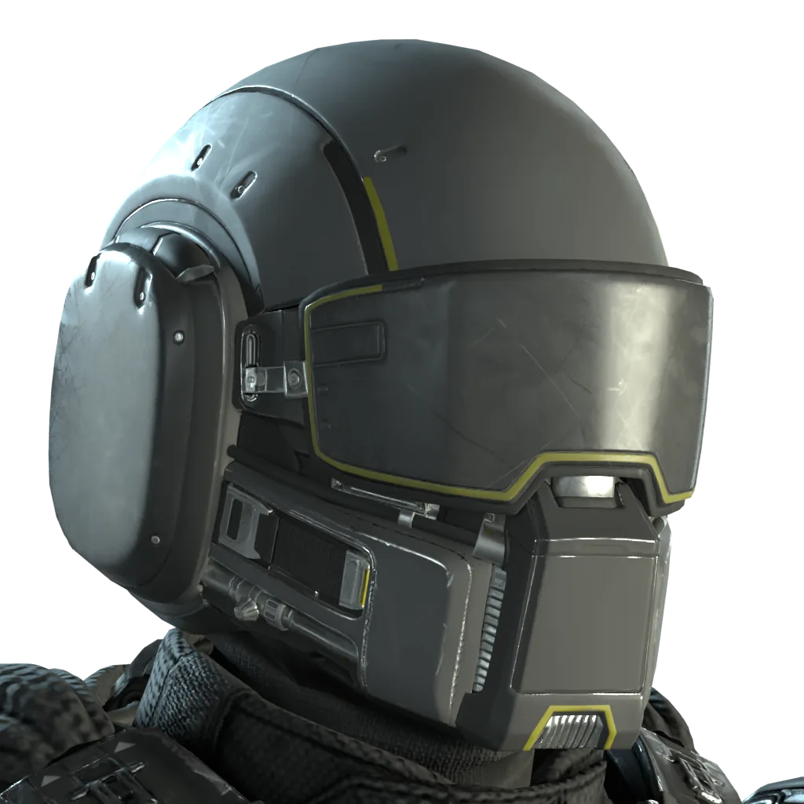

“这套盔甲是许多操作重型机械的超级地球公民的必备制服。从本年度“机械操作效能研讨会暨晚宴”举办之日起，穿戴这套盔甲将不再被视为操作重型机械，这对于长期穿着者而言无疑是个好消息。— 军械库 描述
这套盔甲是许多操作重型机械的超级地球公民的必备制服。从本年度“机械操作效能研讨会暨晚宴”举办之日起，穿戴这套盔甲将不再被视为操作重型机械，这对于长期穿着者而言无疑是个好消息。
— 军械库 描述
O-2 重型 Operator is a set of 重型护甲 in 绝地潜兵 2.